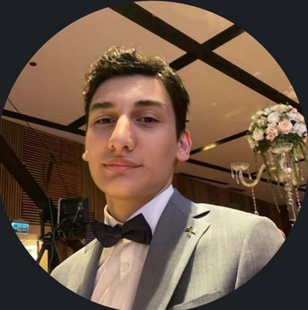

MERHABA, BEN RASİM GÖKTUĞ CAN
Fikirleri üreten,
kodla öğrenen.
İstanbul Kültür Üniversitesi Yazılım Mühendisliği öğrencisiyim. Teknoloji öğrenirken farklı alanlarda üretmeyi ve ekiplerle çalışmayı seviyorum.

RASİM · İKÜabout_me.js● online
01 const rasim = {
02 okul: "İKÜ",
03 bölüm: "Yazılım Müh.",
04 sınıf: 1,
05 merak: [
06 "teknoloji",
07 "tasarım",
08 "üretmek"
09 ]
10 }▍
</> HTML · CSS · JS
C Öğrenme yolunda
KODLA · ÖĞREN · PAYLAŞ
ŞU ANDAYazılım Mühendisliği öğrencisiWeb teknolojilerini öğreniyorÖğrenci kulübünde içerik üretiyor
01 / KISA TANITIM
Öğrenirken üretmeye inanıyorum.
Yazılım yolculuğumun başındayım. HTML, CSS, JavaScript ve C ile temellerimi geliştirirken; İKÜ Endüstri Mühendisliği Kulübü’nün sosyal medya komitesinde de görev alıyorum.
Hakkımda daha fazlası →